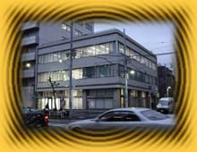

|
|
 |
| ●ＮＤキューブとは…… |
任天堂と、広告代理業最大手である電通との共同出資により、２０００年３月に設立されたばかりの新会社。設立のニュースが新聞各誌で取りあげられるなど、早くも話題沸騰。ゲームボーイアドバンスやモバイル対応ソフトおよびドルフィン(仮称)用ソフトの開発を中心に事業を展開。 |
| ●採用予定 |
応募方法などの問い合わせは下記の番号まで。 >>>>> ０３−５８３３−０３１１（ＮＤキューブ 担当：増田さん） |
| ＮＯＭ： | ２０００年３月……本当にできたてホヤホヤなんですね。ＮＤキューブはどんな会社なんでしょうか、どんな会社になっていくんでしょうか？ |
|
| 坂井： | まだオフィスのビルに看板も出していない状態で（インタビューしたのは３月１６日です……リコ編注）、本当になにもかもがコレからです。インターネット経由で応募できるように、ホームページもこれから立ちあげていこうといったところで。 さて、ファミコン以来およそ２０年が経過したワケですが、任天堂のゲームソフトのあり方というのは現在でもまったく変わっていません。老若男女すべてのユーザーが楽しめる、本当にクオリティが高いものしか発売していないんですよね。たとえばほかのメーカーなら自信を持って売り出すような完成度の作品でも、発売しなかったりすることがある。それがユーザーからの信用、信頼につながっているんですね。われわれはこの考え方に賛同するひとを集め、この考え方にもとづいたソフトを作っていきます。 具体的には、ゲームボーイアドバンス用ソフトを制作します。そのうちにドルフィン用ソフトにも着手することになるでしょう。 ゲームボーイアドバンスは通信機能が特徴であるワケですが、われわれはその特徴を“ゲームをさらに面白くするためのファクター”と捉えています。つまり、通信機能がなければ面白くないソフトを作るのではなく、もともとたいへん面白いうえで「コレに通信機能が絡んだら、もう、たまらんで〜!!」というソフトを作っていきたいと考えているんです。たとえば、インターネットでチャットしながら麻雀をするのが面白いと大評判になっていますが、麻雀自体はインターネットがなくても十分面白い。そういうことです。 |
|
| ＮＯＭ： | ＮＤキューブでは経験者を積極的に採用していくということですが、具体的にはどんな経験があればいいのでしょうか。職種別に教えてください。 |
|
| 坂井： | 企画については、ゲームの企画を１作品以上メインでこなしている方を募集しています。任天堂以外のプラットホームであってもかまいません。ただし、キレイな絵やゴージャスな音楽を多用すれば面白いものができるというような意識は通用しません。いろいろな制約のあるなかで、本質的に面白いものの企画をまとめられる実力のあるひとを求めています。また、ゲームボーイアドバンス用ソフトを作るということで、通信機能を使った新しい遊び方の提案ができるひとがいいですね。 グラフィックデザイナーについては、３Ｄモデリングやアニメーションを作るにあたり、ソフトイマージュやパワーアニメーターなどのツールを経験しているひとを募集しています。ここで名前をあげたにツールに限らず、なにを使っていてもかまいませんよ。また、そのほかに、ドット絵を経験しているひとが欲しいですね。キャラクターの容量を計算できたり、キャラクターの使いまわしができたりするひとであれば、年令がある程度高くても歓迎します。 プログラマーについては、アセンブラとＣ言語で何作品か作ったことのあるひとを募集しています。ちなみに、ゲーム開発とは違う部署で、ＵＮＩＸネットワークに精通している方も募集しています。 |
|
| ＮＯＭ： | 経験以外には、どんなことが求められるでしょうか？ |
|
| 坂井： | リーダーシップですね。チームを引っ張っていく力のあるひと、まとめられる力のあるひとが欲しいです。 また、明るさも求めています。ひとを楽しませるものを作るには、楽しいひとが作らなければというワケです。そのためには、仕事を楽しめる環境も作っていかなければと思っていますよ。たとえば、ウチが「部長」「課長」などの肩書きで呼ぶのを禁止して、「クン」「サン」付けで呼び合うことにしたのも、その考えにもとづいています。 |
|
| ＮＯＭ： | ＮＤキューブの魅力を大々的にアピールしてください。 |
|
| 坂井： | ウチには広報担当は置きません。企画者が直接、ゲーム雑誌なりメディアなりと話をするカタチを取ります。確かに、企画者の仕事は増えることになりますし、開発の忙しい時期とメディア展開する時期とも重なることも予想されますしで忙しくなるでしょうが、間に広報を置くことによって生まれるデメリット……企画者が伝えたかったことが、曲がって伝わってしまうようなことは、極力避けられるのではと思っています。いままでは、そういうことが多くて、なかなか企画者が納得できる環境というのがなかったように思います。 前述の企画者対メディアというつながりもそうですが、いろんなつながり方を考えていきたいとも思っています。携帯通信というキーワードからは、どうしてもゲーム対ユーザーのつながりばかりを連想してしまいがちですが、そこにメディアやメーカーや、いろんなものをミックスしていきたい。電通との協力関係が得られることもあり、新しいカタチのつながり、メディアミックスを提案していけたらと思っています。 待遇の面では、ストックオプション制度を採用しています。もちろん、株式公開を目指していますよ。また、ゲームタイトルごとに、そのタイトルを開発したチームのスタッフ全員に、売り上げの何％かのロイヤリティーを支払うという制度もあります。 |
|
| ＮＯＭ： | 最後に、ＮＤキューブに興味を持ったみなさんに、情熱的なメッセージをお願いします。 |
|
| 坂井： | ほかに先駆けて、われわれが新しいシステムの新しい遊び方を提案していきたいと思っています。たとえば……NINTENDO64の３Ｄスティックですが、結局、任天堂が提案した使い方を超える遊び方を提示したゲームは生まれてきていませんね。われわれがゲームボーイアドバンスの携帯通信機能を使った遊び方を早期に提案することには、そういった意味での大きな意義があると思うのです。 また、任天堂の次期主力ハードであるドルフィンに関しても、いろいろやっていきたいと思っています。ドルフィン用ソフトの開発ツールで、任天堂にないものなども作っていきたいですね。 |
|